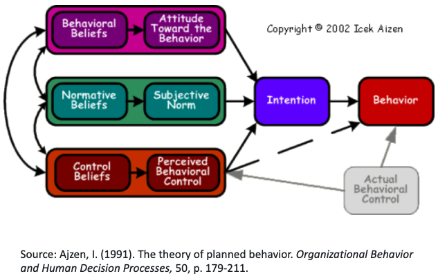

Attitudes#
Definition#
attitude [at-i-tood, -tyood] manner, disposition, feeling, position, etc., with regard to person or thing; tendency or orientation, especially of the mind
Synonyms:
- approach |
- opinion |
- belief |
- perspective |
- bias |
- philosophy |
- character |
- point of view |
- demeanor |
- position |
- mindset |
- posture |
- mood |
- prejudice |
- notion |
- reaction |
- sensibility |
- sentiment |
- stance |
- stand |
- temperament |
- view |
Attitudes refer to the “ways in which one thinks and feels in response to a fact or situation.” BOK2
“Attitudes [are] learned predispositions to respond in a consistently favorable or unfavorable manner.” BOK3
INTENTION OF “ATTITUDES”#
At the professional level, one’s attitudes will affect how knowledge and skills are applied to the solution of a civil engineering problem. BOK2
“Professional attitudes are the positive and constructive attitudes that a civil engineer should display.” BOK3
FROM WHERE DO WE GET OUR ATTITUDES?
Why Attitudes for Civil Engineers? BOK2#
A wealth of study and professional opinion points to the importance of attitude in individual and group achievement.
Teaching of attitudes is an integral part of educational practice.
Attitudes are an integral part of the BOKs of other professions and specialties such as architecture, accounting, and law.
Positive professional attitudes create a more effective and pleasant workplace.
Perceptions of civil engineers may be enhanced by exhibiting positive attitudes, which may also lead to better career opportunities for civil engineers.
DO YOU THINK OUR ATTITUDE MATTERS? WHY OR WHY NOT?
THEORY OF PLANNED BEHAVIOR/ REASONED ACTION#
Theory of Reasoned Action suggests that a person’s behavior is determined by his/her intention to perform the behavior and that this intention is, in turn, a function of his/her attitude toward the behavior and his/her subjective norm. (Ajzen, 1991)

Core Assumptions and Assertions Theory of Planned Behavior/ Reasoned Action
The best predictor of behavior is intention. Intention is the cognitive representation of a person’s readiness to perform a given behavior, and it is considered to be the immediate antecedent of behavior.
This intention is determined by three things: their attitude toward the specific behavior, their subjective norms and their perceived behavioral control.
The theory of planned behavior holds that only specific attitudes toward the behavior in question can be expected to predict that behavior.
In addition to measuring attitudes toward the behavior, we also need to measure people’s subjective norms – their beliefs about how people they care about will view the behavior in question. To predict someone’s intentions, knowing these beliefs can be as important as knowing the person’s attitudes.
Finally, perceived behavioral control influences intentions. Perceived behavioral control refers to people’s perceptions of their ability to perform a given behavior.
These predictors lead to intention. A general rule, the more favorable the attitude and the subjective norm, and the greater the perceived control the stronger should the person’s intention to perform the behavior in question.
Attitudes that support the effective practice of civil engineering… BOK2
An exhaustive list of appropriate attitudes would be difficult to compile. A partial list …might include:
- Commitment |
- Confidence |
- Consideration of Others |
- Curiosity |
- High Expectations |
- Honesty |
- Integrity |
- Intuition |
- Good Judgment |
- Optimism |
- Persistence |
- Positiveness |
- Respect |
- Self-esteem |
- Sensitivity |
- Thoughtfulness |
- Thoroughness |
- Tolerance |
- Fairness |
Attitudes that support the effective practice of civil engineering… BOK3
Professional attitudes encompass a range of elements including |
Other professional attitudes …may include |
|---|---|
Creativity |
Commitment |
Curiosity |
Confidence |
Flexibility |
Empathy |
Dependability |
Entrepreneurship |
Fairness |
|
Honesty |
|
Integrity |
|
Optimism |
|
Persistence |
|
Respect |
Key Professional Attitudes… BOK3#
Creativity… is the ability to make new things or form new ideas and is needed to solve complex civil engineering problems that do not have obvious solutions
Curiosity… is the urge to know about something and is essential for the civil engineer to gain new knowledge and to be more creative
Flexibility… is the ability to change or be changed according to the situation and is critical for civil engineers to work within a diverse group and in an ever changing environment
Dependability… is defined as the quality of being able to be counted on or relied upon and is an attitude civil engineers should display
Application Explore the professional attitudes of creativity, curiosity, flexibility, dependability
Attending the WCOE Job Fair? (its in February and September each year)
Consider….
What positive professional attitudes do you hold?
How might you communicate these to a prospective employer?
Can you think of examples? Illustrations? Willing to share? (class participation)
References#
Ajzen, I. (1991). The theory of planned behavior. Organizational Behavior and Human Decision Processes, 50, p. 179-211.
Lawson (2022), Attitudes Handout to accompany Attitudes Lecture